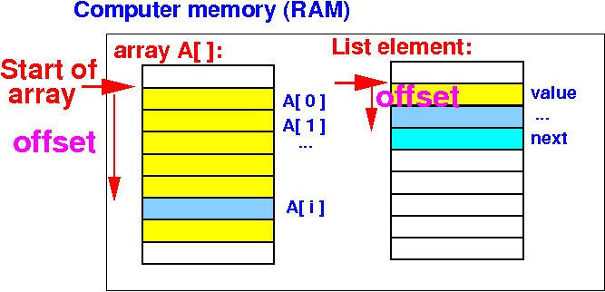

What and why are data structures in a program ?
Simple
and composite variables
- Simple (or "unstructured")
variables:
- Composite (or "structured")
variables:
- are variables that
are composed of
multiple parts
|
- Examples of
structured variables:
- Array:
a series of
identically typed variables
- Object:
group of variables
of different data types
|
|
General
storage
characteristics of data structures
Access expressions for
data stored in data structures in
high level programming languages
How to
accessing a
simple variable
inside data structures
- A
simple variable
within
a data structure
is
located
a certain number of bytes
after the
start location of the
data structure:

- The
distance from the
start of
the data structure is called:
|
We will learn:
(1)
how to
define/store an
array and
(2) the
advanced formats
of the
load and store instructions
(that
uses an offset)
to access
array elements
❮
❯